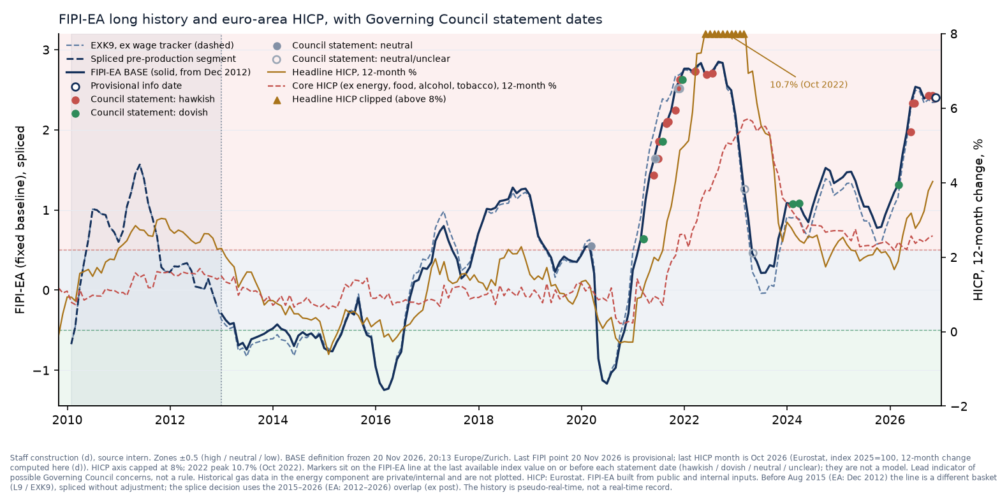

1 · Current state
FIPI-EA and Governing Council statements
Staff construction (d) · source intern · internal staff pageFIPI-EA is an internal staff construction (d), source intern. It is a lead indicator of possible ECB Governing Council concerns, not a rule or model. The overall index is shown with a long-history line (EXK9 basket before Dec 2012, spliced without adjustment onto production BASE from Dec 2012) and euro-area headline and core HICP (right axis capped at 8%). Sub-components are in the dropdown, with links to their free original sources. Historical gas data are private/internal and are not published. The statements screen is not a model. Internal staff page.

FIPI-EA BASE, H2, fixed 2013–2019 baseline, freeze 20 Nov 2026, 20:13 Europe/Zurich. Staff construction (d), source intern. HICP from Eurostat (prc_hicp_minr, EA21, index 2025=100); 12-month rates computed here (d). HICP axis capped at 8%; 2022 peak 10.7% (Oct 2022). Before Aug 2015 (EA: Dec 2012) the line is a different basket (L9 / EXK9), spliced without adjustment; the splice decision uses the 2015–2026 (EA: 2012–2026) overlap (ex post). The history is pseudo-real-time, not a real-time record. Statement texts from official ECB, national central bank or parliamentary transcripts, linked. Shown without endorsement by the ECB, Eurostat, the European Commission, the EIA or the Federal Reserve Bank of New York.
Sub-components (11 slots of the BASE definition)
Latest contribution to FIPI-EA (capped z × weight). Free original sources are linked. Where a component is intern or pending clearance, the raw value is not published; the derived contribution is shown and the rows sum to the index. Gas historical data are private/internal — no time series is published.
| Slot | Component | Weight | Latest value | Contribution | Source |
|---|---|---|---|---|---|
| K1 | Selling-price expectations, next 3 months — industry | 1/12 | 24.8 (balance) · ref 2026-10 | +0.250 (d) | source |
| K2 | Price expectations, next 3 months — services | 1/12 | 15.9 (balance) · ref 2026-10 | +0.250 (d) | source |
| K3 | Price expectations, next 3 months — retail trade | 1/12 | 24.1 (balance) · ref 2026-10 | +0.250 (d) | source |
| R1_PPI | Domestic producer prices, intermediate goods | 1.5/12 | 4.249 (100 × ln 6-month change) · ref 2026-09 | +0.375 (d) | source |
| R2_IMP | Import prices, extra-euro-area, CPA B–D | 1.5/12 | 5.936 (100 × ln 6-month change) · ref 2026-09 | +0.259 (d) | source |
| K7 | Services: labour as a factor limiting business | 1/12 | 18.2 (% of firms) · ref 2026-11 | +0.098 (d) | source |
| K8 | Job vacancy rate / unemployment rate | 1/12 | 0.328 (ratio) · ref 2026-06 | +0.165 (d) | source · Unemployment rate |
| K9 | ECB wage tracker, excluding one-off payments | 1/12 | 2.831 (% y/y, mean of next 6 months) · ref 2026-11 | +0.250 (d) | source |
| K10 | Energy (gas + Brent) | 1/12 | no gas or energy level published | +0.177 (d) | Brent (EIA via FRED)historische Gasdaten privat/intern – keine Zeitreihe veröffentlicht |
| K11 | Global supply-chain pressure | 1/12 | intern — raw value not published (pending clearance) | +0.250 (d) | intern — raw value not published (pending clearance) |
| K12 | Euro nominal effective exchange rate (EER-40, broad) | 1/12 | 2.564 (−100 × ln 6-month change) · ref 2026-10 | +0.077 (d) | source |
| Sum = FIPI-EA | +2.401 (d) = +2.401 (d) | equals the index |
Governing Council statements
Screen of official remarks, newest first. The hawkish / dovish / neutral flag is taken from the existing direction label in the statements file; where that label is mixed or only descriptive, the flag is neutral/unclear. This screen is not a model. 33 statements · hawkish 19 · dovish 7 · neutral 2 · neutral/unclear 5.
| Date | Person | Flag | Quote | Source | V/U |
|---|---|---|---|---|---|
| 18 Nov 2026 | Joachim Nagel | hawkish | Die Preiserwartungen der Unternehmen und die Erzeugerpreise deuten aber darauf hin, dass es erst einmal noch teurer wird. [...] Der EZB-Rat hat bereits zweimal die Zinsen erhöht. Möglicherweise müssen wir da nochmal was… | Official Bundesbank interview page, dated 18 Nov 2026 | V |
| 29 Oct 2026 | Christine Lagarde | hawkish | Indicators of underlying inflation have remained broadly stable, although the early stages of the pricing chain point to upward pressures. | Official ECB press conference transcript | V |
| 30 Sep 2026 | Isabel Schnabel | hawkish | The stronger aggregate demand, the more scope firms have to pass higher input costs on to consumer prices. By restraining growth in aggregate demand, higher interest rates can limit the extent to which a relative price… | Official ECB speech (URL from the official site; quote taken from the official speeches dataset, short excerpt) | V |
| 23 Jun 2026 | Philip R. Lane | hawkish | A range of forward-looking signals point to inflationary pressures in the coming months, notably Purchasing Managers’ Index input prices, import prices, pipeline pressures for food, selling price expectations and some… | Official ECB speech | V |
| 11 Jun 2026 | Christine Lagarde | hawkish | In line with this commitment, we today decided to raise the three key ECB interest rates by 25 basis points. The war in the Middle East is generating inflation pressures [...]. Compared with March, staff have revised up… | Official ECB press conference transcript | V |
| 26 May 2026 | Isabel Schnabel | hawkish | Owing to the global nature of the shock, there are increasing pipeline pressures worldwide, as reflected in strongly rising producer prices. I expect these higher costs to trickle through global supply chains… | Official ECB interview page | V |
| März 2026 (Tag n/a) | François Villeroy de Galhau | dovish | Ce dont nous parlons peut entraîner un peu plus d'inflation et un peu moins de croissance. Mais [...] mars 2026 n'est pas 2022. [...] la première, c'est qu'en 2022, [il y avait des] ports qui étaient congestionnés. Ça… | Official Banque de France transcript (PDF) | V |
| 27 Mar 2024 | Piero Cipollone | dovish | Together with the ongoing easing of pipeline pressures and the relaxation of supply bottlenecks, this has supported disinflation in the other HICP components. | Official ECB speech | V |
| 8 Feb 2024 | Philip R. Lane | dovish | In addition, the ongoing easing of pipeline pressures and the relaxation of supply bottlenecks have supported the disinflation in the other HICP components. | Official ECB speech | V |
| 4 May 2023 | Christine Lagarde | neutral/unclear | Lower energy prices, the easing of supply bottlenecks and fiscal policy support for firms and households have contributed to the resilience of the economy. | Official ECB press conference transcript | V |
| 6 Mar 2023 | Philip R. Lane | neutral/unclear | Early in the pricing chain, producer price inflation and import price inflation for intermediate goods have been decreasing strongly since April 2022 – reflecting lower pressures from input costs including energy and… | Official ECB speech | V |
| 21 Jul 2022 | Christine Lagarde | hawkish | Firms continue to face higher costs and disruptions in their supply chains, although there are tentative signs that some of the supply bottlenecks are easing. | Official ECB press conference transcript | V |
| 9 Jun 2022 | Christine Lagarde | hawkish | The war in Ukraine and renewed pandemic restrictions in China have made supply bottlenecks worse again. As a result, firms face higher costs and disruptions in their supply chains, and their outlook for future output… | Official ECB press conference transcript | V |
| 17 Mar 2022 | Isabel Schnabel | hawkish | Such indirect effects of higher energy prices can be a persistent source of upward pressure on underlying inflation. They are not a one-off price shock that policymakers can simply look through, in particular when… | Official ECB speech | V |
| 17 Mar 2022 | Christine Lagarde | hawkish | These measures have been influenced by energy prices and supply bottlenecks, but with pipeline pressures swelling, the upward impact may last for a while. | Official ECB speech | V |
| 16 Dec 2021 | Christine Lagarde | dovish | But, in the course of 2022, we expect energy prices to stabilise, consumption patterns to normalise, and price pressures stemming from global supply bottlenecks to subside. | Official ECB press conference transcript | V |
| 30 Nov 2021 | Luis de Guindos | hawkish | In 2022, bottlenecks may last longer than expected. As a result, there’s a risk that inflation will not go down as quickly and as much as we predicted. | Official ECB interview page | V |
| 29 Nov 2021 | Isabel Schnabel | neutral/unclear | Producer prices, which are an indicator of inflation, grew by 18.4 per cent within a single month. This was the steepest rise since the 1950s. [...] I can see why many people are currently worried about very high… | Official ECB interview page | V |
| 26 Nov 2021 | Christine Lagarde | hawkish | Supply bottlenecks are a second group of drivers. Demand surged after the end of the first lockdown whereas supply is still constrained. These bottlenecks in, say, computer chips, containers and road haulage capacity… | Official ECB interview page | V |
| 19 Nov 2021 | Christine Lagarde | neutral/unclear | In particular, rising energy prices, supply bottlenecks and the withdrawal of physical distancing measures are causing considerable frictions in some sectors. This is being reflected in high inflation rates, which are… | Official ECB speech | V |
| 28 Oct 2021 | Christine Lagarde | hawkish | In the near term, supply bottlenecks and rising energy prices are the main risks to the pace of recovery and the outlook for inflation. | Official ECB press conference transcript | V |
| 9 Sep 2021 | Christine Lagarde | hawkish | If supply bottlenecks last longer and feed through into higher than anticipated wage rises, price pressures could be more persistent. | Official ECB press conference transcript | V |
| 2 Sep 2021 | Jens Weidmann | hawkish | We do, however, also need to keep an eye on the risks to the price outlook. In my view, the risks are tilted to the upside right now. [...] One risk is that supply bottlenecks might trigger additional price surges. | Official Bundesbank page, dated 2 Sep 2021 | V |
| 25 Aug 2021 | Philip R. Lane | hawkish | The counterbalance is that it looks like bottlenecks are going to be more persistent than expected. | Official ECB interview page | V |
| 29 Jul 2021 | Fabio Panetta | dovish | Bottlenecks in production have also pushed the prices of certain goods up for a few months, until the economy returns to normal. | Official ECB interview page | V |
| 3 Jul 2021 | Isabel Schnabel | hawkish | In the past, there have often been substantial lags in the pass-through of pipeline pressure. ECB staff analysis finds, for example, that it usually takes one year or more for cost-push shocks in intermediate goods… | Official ECB speech (speeches dataset + live HTML slug confirmed from the 2021 index) | V |
| 28 Jun 2021 | Jens Weidmann | hawkish | Commodity and material prices as well as transport costs have risen sharply, and inflation is already showing up very clearly in the producer prices for intermediate goods. These price pressures are likely to spill over… | Official Bundesbank speech page | V |
| 10 Jun 2021 | Christine Lagarde | neutral | Manufacturing production remains robust, supported by solid global demand, although supply-side bottlenecks could pose some headwinds for industrial activity in the near term. | Official ECB press conference transcript | V |
| 10 Jun 2021 | Governing Council (monetary policy account) | neutral/unclear | Pronounced rises in input costs (linked to surging commodity price inflation, substantial increases in shipping costs and supply shortages of some raw materials) had led to upward pressures at the early stages of the… | Official ECB monetary policy account | V |
| 28 May 2021 | Isabel Schnabel | hawkish | At the moment, demand is surging while supply is plagued by bottlenecks and supply chain disruptions. [...] We see that delivery times have gone up quite substantially, the ratio of orders over inventories has gone up… | Official ECB interview page | V |
| 18 Mar 2021 | Christine Lagarde | dovish | Underlying price pressures are expected to increase somewhat this year due to current supply constraints and the recovery in domestic demand. Nevertheless, we judge that these pressures will remain subdued overall. | Official ECB hearing remarks | V |
| 17 Mar 2021 | Frank Elderson | dovish | It is true that pandemic-related supply constraints, among other factors, are expected to increase inflation during this year. However, our assessment is that underlying price pressures will remain muted due to weak… | Official ECB interview page | V |
| 12 Mar 2020 | Christine Lagarde | neutral | In particular, it will slow down production as a result of disrupted supply chains and reduce domestic and foreign demand, especially through the adverse impact of the necessary containment measures. | Official ECB press conference transcript | V |
⚠ Data and sources – caveats (FIPI-EA)
FIPI-EA is an internal staff construction (d), source labelled intern. It is a lead indicator of possible ECB Governing Council concerns, not a rule or model. The statements screen is not a model.
Values are from the frozen BASE definition of 20 Nov 2026, 20:13 Europe/Zurich. The latest point, 2026-11-20, is provisional. The last non-provisional reference date is 30 Oct 2026 (+2.395). Zones are ±0.5. Not validated for an investment decision.
Momentum uses the v1.1 rule D2X (sign of the 2-month change, dead zone ±0.08; sign of the 1-month change, dead zone ±0.05; inside a dead zone the previous trend is kept) and is classified as rising, bottoming, topping or falling. This is a descriptive classification (d), not a forecast signal. The 2020-01 to 2026-10 holdout test was not statistically significant (internal FIPI-Momentum v1.1, Auditor green, 22 Nov 2026). Inflation used in that study is the current vintage only (no real-time ALFRED vintages).
Historical gas data are private/internal — no time series published. No gas time series, chart or historical gas values are shown. The energy contribution is a derived figure (d). The global supply-chain pressure contribution is shown (d); the raw value is not published (intern — raw value not published, pending clearance).
The production FIPI-EA BASE series starts in December 2012. Before Aug 2015 (EA: Dec 2012) the line is a different basket (L9 / EXK9), spliced without adjustment; the splice decision uses the 2015–2026 (EA: 2012–2026) overlap (ex post). The history is pseudo-real-time, not a real-time record. HICP axis capped at 8%; 2022 peak 10.7% (Oct 2022).
Inflation breadth
How widespread inflation is across the basket · authors’ calculations (d) from official dataWeighted share of official HICP components whose 12-month rate is above or below fixed thresholds (strict > 3% / < 1%), and the diffusion between the two. Shares, diffusion and z-scores are authors’ calculations (d) from official indexes and basket weights V. Research prototype, not sealed and not a forecast.
Euro area HICP: inflation breadth
Thresholds: strict > 3% / < 1%.
Breaks and sample notes: Unspliced classification breaks in December 2017 (ECOICOP 4-digit to 5-digit) and January 2026 (ECOICOP version 2). October 2026 is a flash estimate with no component data, so the latest complete month is September 2026. Games of chance (CP09470) are dropped until an official year-on-year rate exists.
Method (d): Weighted share of official finest HICP leaves (changing-composition euro area, NSA official RCH_A rates and official weights), renormalised each month over leaves with a published rate and a positive weight. Classification vintages are not spliced.
Shares, diffusion and the z-score are authors' calculations (d) from official linked NSA indexes and official basket weights (V), renormalised each period over items with a published rate and a strictly positive weight. Thresholds are strict (> / <). This is a research prototype, not a sealed nowcast and not a trade input.
Source acknowledgement: Source: Eurostat, datasets PRC_HICP_MANR, PRC_HICP_MIDX, PRC_HICP_INW, PRC_HICP_MINR and PRC_HICP_IW (geo=EA, changing-composition euro area), the HICP ESMS (prc_hicp_esms), the information note Info_note_HICP_COICOP18_20260128, and “Questions & Answers on the improvements in the Harmonised Index of Consumer Prices (HICP) effective January 2026” (25 February 2026, updated 3 March 2026).
Required adapted-work statement:
Adapted from Eurostat, datasets PRC_HICP_MANR, PRC_HICP_MIDX, PRC_HICP_INW, PRC_HICP_MINR and PRC_HICP_IW (geo=EA), and from the HICP ESMS, the January 2026 ECOICOP ver. 2 information note and the Questions & Answers on the improvements in the HICP (25 February 2026, updated 3 March 2026). This is not an official Eurostat product. Eurostat is not responsible or liable for any consequences arising from the reuse, or for any conclusions drawn from these adapted files.
Licence: Commission Decision 2011/833/EU. Copyright notice: https://ec.europa.eu/eurostat/web/main/help/copyright-notice
Verified against: /docs/LICENCE.md in snapshot 20261113T191620Z_breadth_ea.
⚠ Data and sources – caveats (inflation breadth)
This is a research prototype. It is not sealed and is not a trade input. Official indexes and weights are V. Shares, diffusion and z-scores are authors' calculations (d). Judgement is marked (j). Unverified items are U. Missing official values are n/a. Nothing here is a recommendation.
Thresholds are strict greater-than / less-than. Weights are renormalised each period over items with a published rate and a strictly positive weight. The z-score is the latest diffusion minus the 2011–2019 mean, divided by the 2011–2019 standard deviation (d).
Euro-area series notes: three unspliced classification vintages — ECOICOP 4-digit through November 2017, ECOICOP 5-digit through December 2025, and ECOICOP version 2 from January 2026. The dashed lines on the chart mark December 2017 and January 2026. October 2026 is flash-only (no component data); the latest complete month is September 2026. Games of chance (CP09470, 2026 weight 12.82) have no official year-on-year rate in this snapshot and are dropped (n used / n target 275 / 275 after that drop). geo=EA is the changing-composition euro area.
Licence: Commission Decision 2011/833/EU, credit as in credit.md, verified against the snapshot licence file.